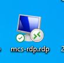
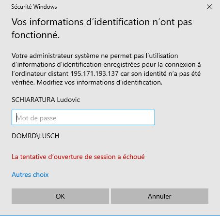
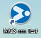
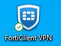
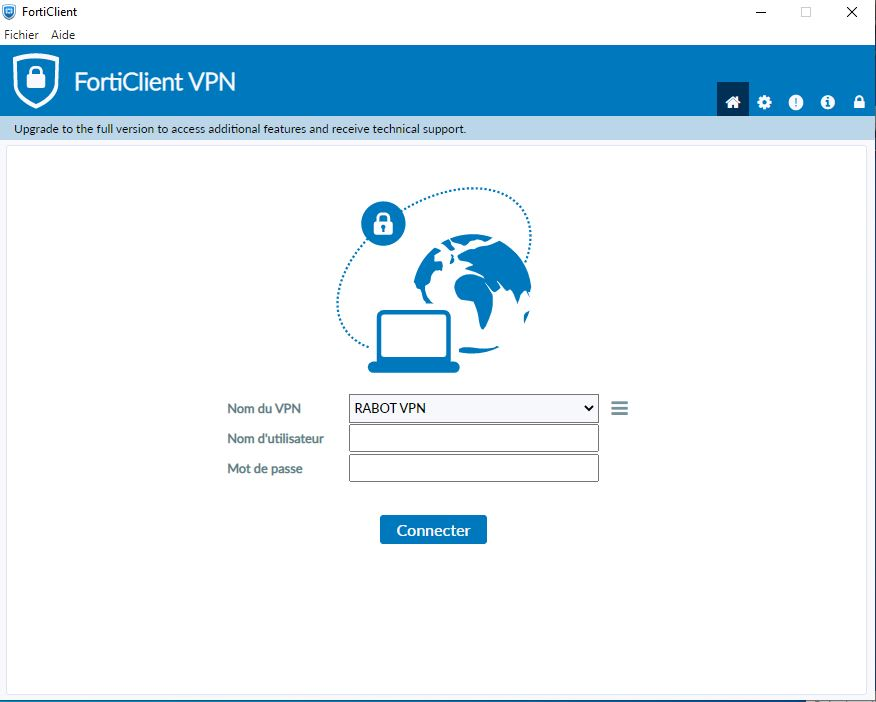
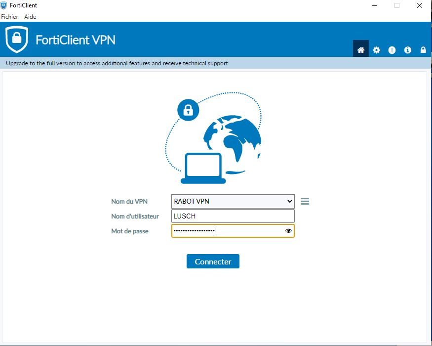
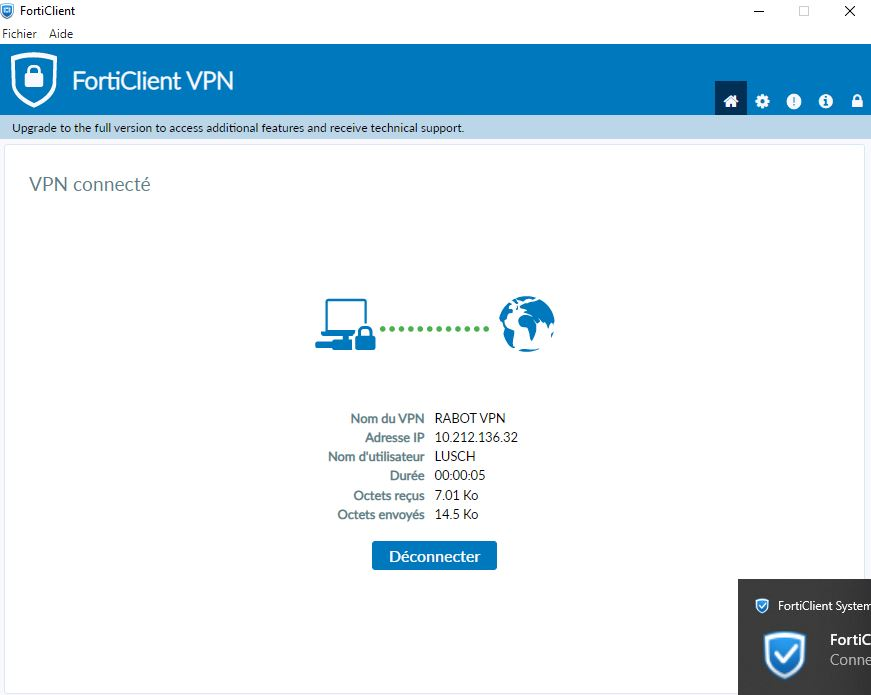
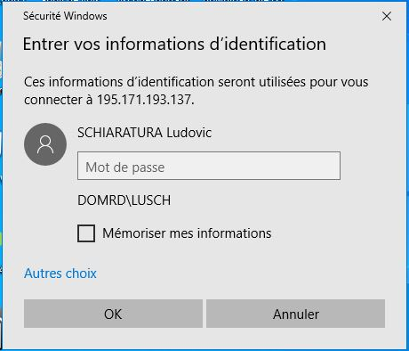
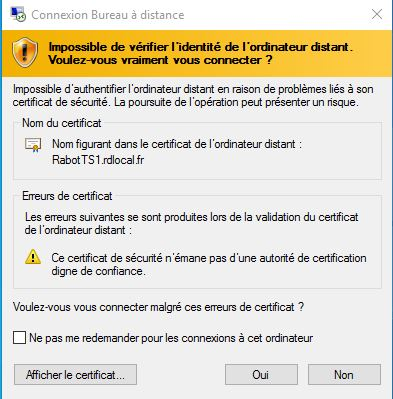

Connexion dans l'environnement RDC
Pour la connexion dans l’environnement Rabot Dutilleul Construction, il vous faut votre identifiant et mot de passe fournis par l’administrateur réseau pour pouvoir accéder à l’application.
Il faut procéder de la façon suivante :
Cliquer sur l’icône suivante sur le bureau de votre PC
Cette fenêtre va s’ouvrir
Il faut entrer votre mot de passe et cliquer OK, vous aller arriver dans cet environnement qui se trouve être l’ordinateur distant sur lequel vous venez de vous connecter.

Le fond d’écran peut varier, il se trouve que j’ai choisi celui-là, mais l’important est que les icones d’accès à l’application soient présentes sur ce bureau distant :
Icône d’accès a MCS E-mat production, celui que vous allez utiliser tous les jours pour faire toutes vos opérations.
Icône d’accès à MCS E-mat Test celui que vous allez utiliser au début pour vous former à l’utilisation de l’application et plus tard tester des outils internes peu utilisés afin de voir si les résultats attendus sont conformes à vos attentes avant de faire de même sur la version production
Connexion HORS environnement RDC
Pour la connexion hors de l’environnement RDC, lorsque vous êtes en télétravail par exemple, il vous faudra passer par un VPN, rassurez-vous, il est fourni sur votre PC par le service informatique.
Bien entendu vous devez disposer chez vous d’un accès à internet via votre box ou, si non, vous connecter via votre téléphone mobile en mode point d’accès.
Y connecter votre ordinateur au préalable et ouvrir votre boite mail
Il vous faudra d’abord cliquer sur cette icone
Lancera l’application FortiClient VPN permettant une liaison sécurisée sur le réseau RDC en ouvrant la fenêtre ci-dessous
Vous devrez ensuite y rentrer votre identifiant RDC et votre mot de passe (les mêmes que lorsque vous démarrez votre poste le matin).
Cliquer sur « connecter » et le système vous enverra par mail un ‘token’ qu’il faudra taper dans le champ réservé. D’où ouvrir son appli mail avant.


Entrer le « token code » reçu dans le champ ‘jeton’ et cliquer sur OK pour lancer la connexion sécurisée.
Attention, vous n’avez que quelques secondes, 30s je pense voire moins pour entrer ce code. Sinon, il faut recommencer depuis le début
Si tout se passe bien vous aurez cet écran :
Cet écran indique que vous êtes connecté sur le réseau RDC en toute sécurité depuis votre lieu de télétravail par exemple.
Vous pouvez maintenant vous connecter à e-mat, mais, attention, la procédure diffère quelque peu.
Cette icone normalement présente également sur votre bureau est le lanceur d’application à utiliser pour vous connecter via le serveur VPN précédemment démarré.
Cette icone va vous amener ici :
Via le VPN le système vous a reconnu et affiche bien votre nom, reste à rentrer le mot de passe, toujours celui que vous entrez le matin et obtiendrez cette fenêtre :
Cliquez sur « oui » pour continuer et vous allez ainsi arriver sur l’ordinateur distant comme avec la connexion expliquée précédemment.
C'est terminé pour la connexion, nous allons pouvoir passer maintenant aux choses sérieuses retournons sur le menu